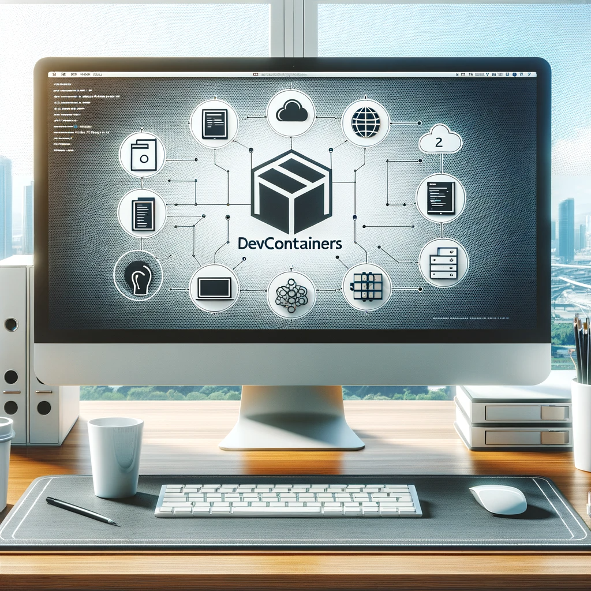

Vorteile von VSCode DevContainer gegenüber DevBoxen
Eine Gegenüberstellung
Robert Hoffmann, 11.01.2024
Einführung
- Thema: Notwendigkeit und Vorteile der Einführung von .devcontainern in der Gematik
- Ziel: Entscheidungsträger von der Bedeutung vorbereiteter Entwicklungsumgebungen zu überzeugen.
Agenda
- Vergleich des Aufbaus
- Vergleich des Nutzerkreises
- Weitere Vorteile von DevContainern
- Beispiele in der Gematik
- Schlussfolgerung
Aufbau und Konsequenzen der DevBox-Architektur

Anpassung: DevBox-Anpassung für ein Repository obliegt dem Nutzer.
Tools- und Skriptkonfiguration: Spezifisch für DevBox, nicht für das Repository.
Tool-Verantwortung: Nutzer gewährleistet korrekte Tool-Versionen für das Repository.
Repositoriumsfunktionalitäten: Funktionalitäten müssen vom Nutzer installiert und getestet werden.
=> Die DevBox erfordert vom Nutzer individuelle Anpassungen und spezifische Tool-Konfigurationen. Nutzer sind verantwortlich für die korrekte Einrichtung und das Testen der Repositoriumsfunktionalitäten, was den Einstieg erschweren kann.
Aufbau und Konsequenzen der DevContainer-Architektur

Anpassung: Anpassung der DevContainer erfolgt durch den Ersteller des Repos.
Tools- und Skriptkonfiguration: Vom Ersteller für das Repository konfiguriert.
Einheitliches Setup: Alle Nutzer nutzen dasselbe, getestete Setup.
Repositoriumsfunktionalitäten: Funktionalitäten sind für den DevContainer getestet und funktionstüchtig.
=> Die DevContainer bieten eine vom Ersteller vorgegebene, einheitliche Konfiguration. Dies erleichtert den Einstieg, da Nutzer ein getestetes und sofort einsatzbereites Setup vorfinden und sich nicht um individuelle Anpassungen kümmern müssen.
Konsequenzen des Aufbau DevBox vs. DevContainer
| Kategorie | DevBox | DevContainer |
|---|---|---|
| Anpassung | Individuelle Konfiguration durch den Nutzer vor der ersten Benutzung eines Repositories notwendig | Anpassung durch den Ersteller des Repositories, was Einheitlichkeit und Zuverlässigkeit erhöht |
| Tools- und Skriptkonfiguration | Wahl und Konfiguration der Tools und Skripte spezifisch für die DevBox und nicht für das jeweilige Repository | Tools und Skripte sind spezifisch für das Repository vorkonfiguriert |
| Verantwortung für korrekte Tool-Verwendung | Der Nutzer trägt die Verantwortung für die Verwendung der richtigen Tools in der korrekten Version | Getestetes Setup für alle Nutzer, vereinfacht den Prozess und minimiert Fehlerquellen |
| Verfügbarkeit der Repositoriumsfunktionalitäten | Funktionalitäten des Repositories müssen vom Nutzer installiert und getestet werden | Funktionalitäten sind sofort einsatzbereit und getestet, was die Benutzerfreundlichkeit steigert |
=> Der Nutzer trifft auf ein vorkonfiguriertes Setup und kann sofort starten. Dies steigert die Benutzerfreundlichkeit und reduziert Fehlerquellen.
Nutzerkreis und Eigenschaften der DevBox

Zielgruppe: Ausschließlich für Gematik-Mitarbeiter konzipiert.
Technische Anforderungen: Technisch versierte Nutzer für die Konfiguration des Setups erforderlich.
Kooperationsmöglichkeiten: Eingeschränkt auf interne Mitarbeiter.
=> Die DevBox richtet sich primär an Gematik-Mitarbeiter und erfordert für die Einrichtung technische Kenntnisse, was ihren Einsatzbereich auf Nutzer mit entsprechender Expertise beschränkt.
Nutzerkreis und Eigenschaften der DevContainer

Zielgruppe: Verwendung innerhalb der Gematik sowie von Industrie und Partnern möglich.
Technische Anforderungen: Reduzierte technische Hürden durch DevContainer mit Docker-Setup. Keine Eintrittsbarrieren bei Nutzung der Codespaces.
Kooperationsmöglichkeiten: Erleichtert die Kooperation bei Spezifikationen, Tools und POCs, minimiert Konfigurationshürden.
=> DevContainer erweitern den Nutzerkreis über Gematik-Mitarbeiter hinaus und bieten durch einfache Zugänglichkeit und geringe Konfigurationshürden eine verbesserte Basis für Kooperationen.
Vergleich des Nutzerkreises: DevBox vs. DevContainer
| Kategorie | DevBox | DevContainer |
|---|---|---|
| Zielgruppe | Ausschließlich für Gematik-Mitarbeiter konzipiert | Verwendung innerhalb der Gematik sowie von Industrie und Partnern möglich |
| Technische Anforderungen | Technisch versierte Nutzer für die Konfiguration des Setups erforderlich | Reduzierte technische Hürden durch DevContainer mit Docker-Setup. Keine Eintrittsbarrieren bei Nutzung der Codespaces. |
| Kooperationsmöglichkeiten | Eingeschränkt auf Geamtik Mitarbeiter mit Expertise | Erleichtert die Kooperation bei Spezifikationen, Tools und POCs, minimiert Konfigurationshürden |
=> DevContainer ermöglichen eine erweiterte Nutzerbasis und reduzieren technische Hürden im Vergleich zur DevBox. Dies fördert die Kooperation und Effizienz.
Weitere Vorteile von DevContainern
- Automatisches Routing der Ports erleichtert das Netzwerksetup
- Flexibel einsetzbar mit und ohne Gematik-VPN
- Zugriff auf eine breite Palette spezifischer DevContainer-Images
- Benutzerfreundliches UI in VSCode für einfaches Setup neuer Container
- Verminderung von Supportaufwand durch einheitliche Entwicklungsumgebungen
- Beschleunigte und vereinfachte Integration mit GitHub
Beispiele für die Verwendung von DevContainern bei der Gematik
- Einsatz eines Python+Postgres-Images
- VSCode-Extensions zur Konfiguration der Entwicklungsumgebung
- Automatisches Einrichten der Datenbank und Starten der Dienste
Ergebnis: POC kann von jedem Entwickler mit einem Klick gestartet werden, was eine hohe Effizienz und Benutzerfreundlichkeit gewährleistet.
- DevContainer ermöglichte eine vereinfachte Kooperation mit Partner "Gefyra"
- Einheitliche Einrichtung der FHIR-Validierungspipeline in "Ready to Run"-Zustand:
- Konsistente Konfiguration und Versionierung der Tools
Ergebnis: Enorme Zeiteinsparung und vereinfachte Kooperation durch standardisierte und vorbereitete Entwicklungs-Tools.
Schlussfolgerung
Die Einführung von DevContainern stellt eine entscheidende Verbesserung unserer Entwicklungsprozesse dar, indem sie Effizienz und Agilität in den Vordergrund stellt.
- Die Herausforderungen mit der aktuellen DevBox zeigen die Notwendigkeit für eine vereinheitlichte, nutzerfreundliche Lösung.
- DevContainer bieten eine zukunftsorientierte Entwicklungsumgebung, die Effizienz und Produktivität steigert.
- Wir stehen vor der Gelegenheit, unsere technologische Landschaft zu modernisieren und unsere Kooperationsmöglichkeiten zu verbessern.
Ich lade alle Entscheidungsträger ein, sich dieser innovativen Veränderung anzuschließen und sie aktiv zu unterstützen.